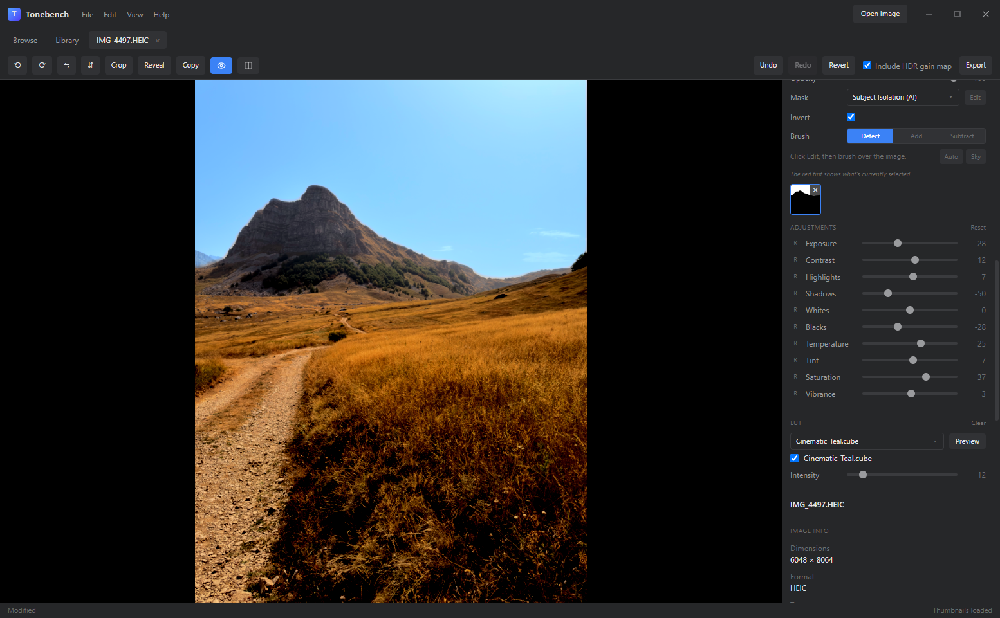
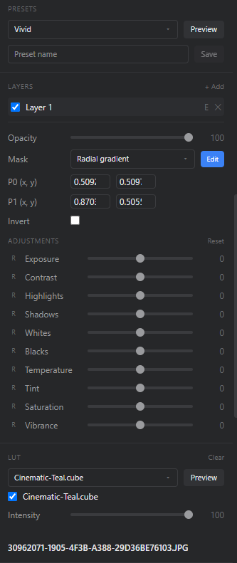
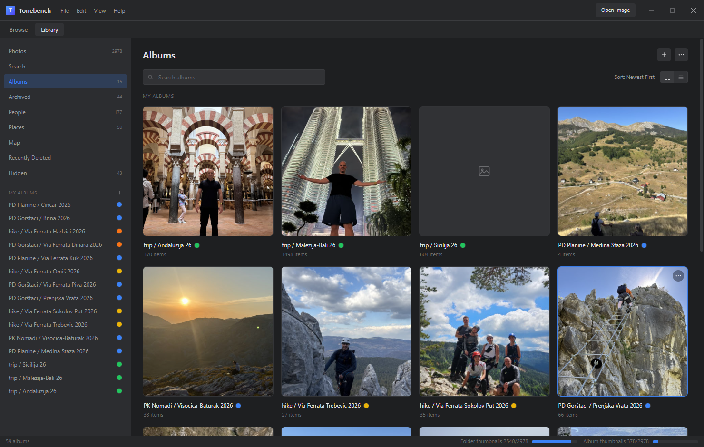
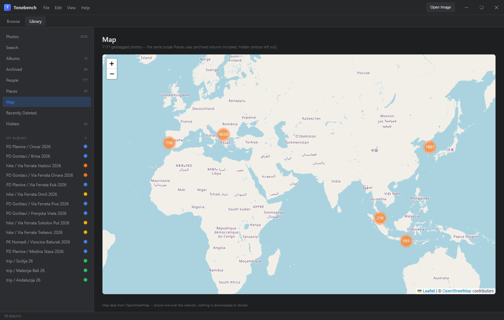
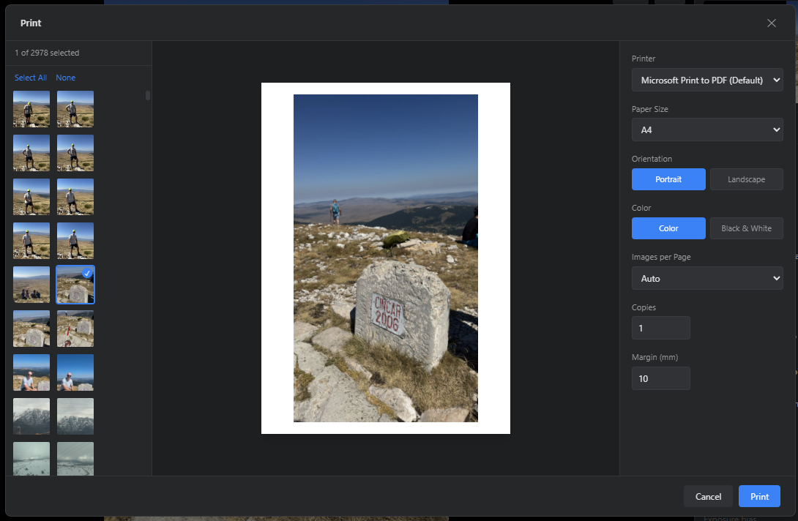
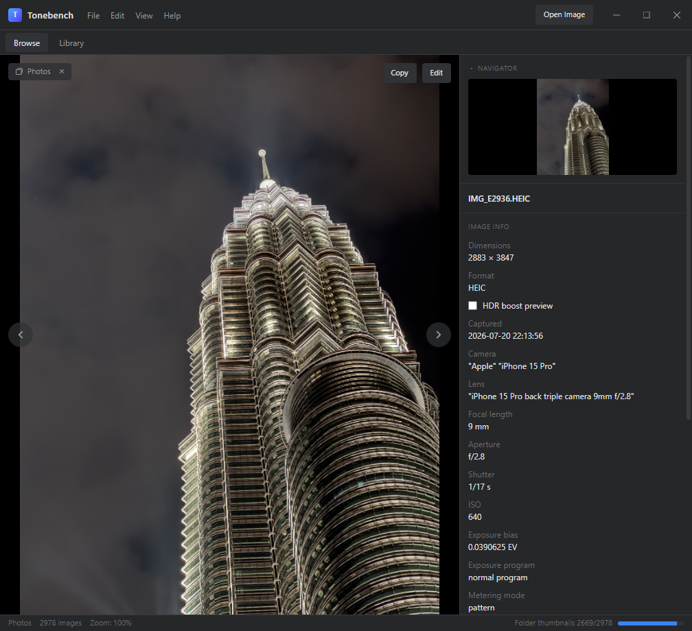

Instant browsing
Open any folder and flip through it on a filmstrip. Large folders, RAW files and animated GIFs stay smooth, and the metadata panel shows the full EXIF at a glance.
Tonebench is a fast desktop photo viewer, editor and library. Open a folder and start browsing, grade RAW and HDR files with live-preview sliders, and find any photo by describing what's in it — with no account, no cloud and no subscription.
Version 0.1.0 · Windows 10/11, 64-bit · macOS on Apple Silicon (M1 and later)

From the first look at a memory card to a finished print.
Open any folder and flip through it on a filmstrip. Large folders, RAW files and animated GIFs stay smooth, and the metadata panel shows the full EXIF at a glance.
Every adjustment renders on the GPU as you drag the slider. Your original file is never touched — edits are saved separately and applied again on export.
Search for “people walking in the woods” or “dog on a beach”. An on-device AI model indexes your library, so photos never leave your computer.
Photos with an embedded HDR gain map — from recent iPhones and Android phones — display with their full brightness range, and HEIC sources export with a real gain map.
No accounts and no uploads. Search, subject selection and editing all run on your computer. The only thing that touches the network is the map view, which loads OpenStreetMap tiles.
A built-in print dialog with live preview lets you lay out several photos on one page, choose paper and color options, and send it to any printer — or to PDF.
Editing
Shape the tone and color of a photo with the controls you already know, and see the result immediately — even on a full-resolution RAW.
.cube looks and blend them in with an intensity slider.

Library
Your photos stay exactly where they are. Tonebench adds a library on top that groups them however you like, across folders and drives.
Formats



New versions are published on GitHub.
Windows 10/11 (64-bit) · macOS on Apple Silicon · All releases